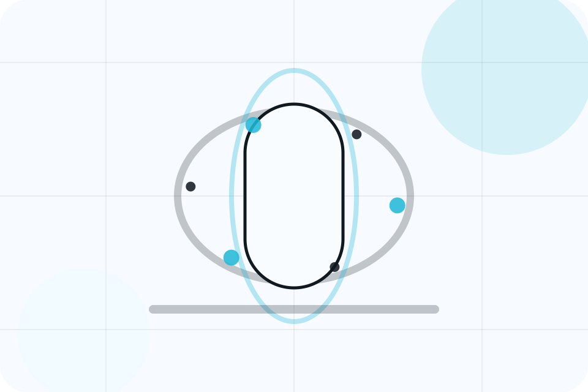
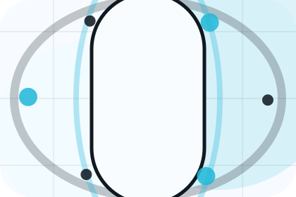

Best Fit
Who should use preventive and when it belongs in the treatments journey.
Treatments / 01
Treatments opens as a clear healthcare decision hub: what Aster offers, who it helps, why it matters, and which route to take first.
The first screen combines positioning, proof, primary action, and fast internal navigation, so people can act immediately or compare the rest of the treatments route with context.
Body scan split hero
Select the closest route and Aster keeps the next step, proof, and follow-up expectation aligned with fear reduction and care confidence.

Treatments / 02
Overview explains the practical scope, best-fit situations, and expected outcome so healthcare visitors can compare options without decoding jargon.
The section keeps the offer concrete: what is included, who it is best for, what decision it supports, and which linked route gives the deeper detail.
Explore TreatmentsWho should use overview and when it belongs in the treatments journey.
The practical benefit visitors should expect after choosing this route.
Where to compare details, pricing, support, or contact options before committing.
Treatments / 03
Preventive explains the practical scope, best-fit situations, and expected outcome so healthcare visitors can compare options without decoding jargon.
The section keeps the offer concrete: what is included, who it is best for, what decision it supports, and which linked route gives the deeper detail.
Explore TreatmentsWho should use preventive and when it belongs in the treatments journey.
The practical benefit visitors should expect after choosing this route.
Where to compare details, pricing, support, or contact options before committing.
Treatments / 04
Diagnostic explains the practical scope, best-fit situations, and expected outcome so healthcare visitors can compare options without decoding jargon.
The section keeps the offer concrete: what is included, who it is best for, what decision it supports, and which linked route gives the deeper detail.
Explore Treatments
Who should use diagnostic and when it belongs in the treatments journey.
Treatments / 05
Specialist explains the practical scope, best-fit situations, and expected outcome so healthcare visitors can compare options without decoding jargon.
The section keeps the offer concrete: what is included, who it is best for, what decision it supports, and which linked route gives the deeper detail.
Explore TreatmentsWho should use specialist and when it belongs in the treatments journey.
The practical benefit visitors should expect after choosing this route.
Where to compare details, pricing, support, or contact options before committing.
Treatments / 06
Benefits defines the better state Aster is built to create, with enough detail to make the promise believable.
A scan-first care journey with minimalist copy, body-data panels, instant-results proof, and a direct appointment CTA. The section grounds that direction in concrete benefits, visible tradeoffs, and a next route visitors can use when the promise feels relevant.
Explore TreatmentsBenefits defines what becomes clearer, easier, or safer when Aster is the chosen route.
The benefit is tied to fear reduction and care confidence, not a vague quality claim.
Visitors get a linked path to compare the promise against services, standards, or examples.
Treatments / 07
Preparation explains the practical scope, best-fit situations, and expected outcome so healthcare visitors can compare options without decoding jargon.
The section keeps the offer concrete: what is included, who it is best for, what decision it supports, and which linked route gives the deeper detail.
Explore TreatmentsAster structures preparation around best fit, what changes, and a clear next route so visitors can compare the block quickly before they book an appointment.
Book AppointmentTreatments / 09
Recovery explains the practical scope, best-fit situations, and expected outcome so healthcare visitors can compare options without decoding jargon.
The section keeps the offer concrete: what is included, who it is best for, what decision it supports, and which linked route gives the deeper detail.
Explore TreatmentsWho should use recovery and when it belongs in the treatments journey.
The practical benefit visitors should expect after choosing this route.
Where to compare details, pricing, support, or contact options before committing.
Treatments / 10
Aster closes the treatments route with a clear action, a quick reminder of the value, and a low-friction way to book an appointment.
Visitors who are ready can use the primary action. Visitors who are still comparing can scan the section links, proof, and support routes before they book an appointment.
Book AppointmentThe final block keeps the choice simple: act now, compare one more proof route, or send enough detail for a focused response.
Book Appointmentfear reduction and care confidence
A scan-first care journey with minimalist copy, body-data panels, instant-results proof, and a direct appointment CTA. Treatments ends with a direct path to book an appointment, plus enough context for visitors who still need to compare.
Information supports planning and is not a diagnosis or emergency instruction. People should use local emergency services for urgent symptoms.